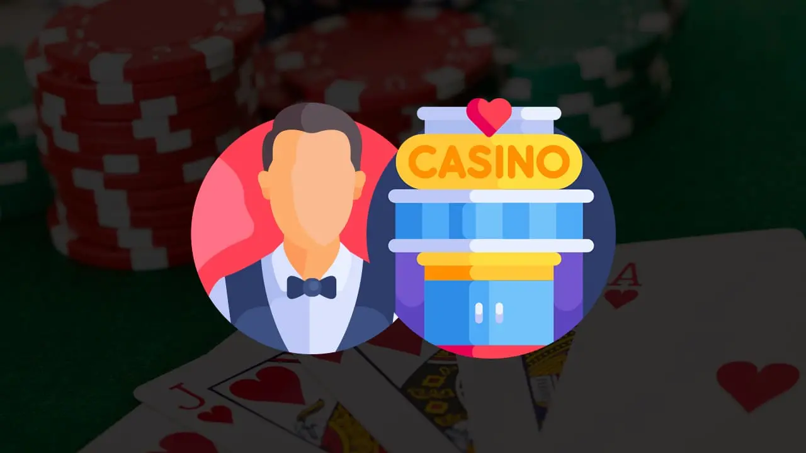

Stake Casino Blog
Willkommen im Stake Casino Blog, hier halten wir Sie auf dem Laufenden über die neuesten Krypto- und Casino Nachrichten. Auf dieser Seite werden die beliebtesten Themen behandelt. Dazu gehören aktuelle Casino-Boni für neue und treue Spieler, aber auch für Spieler, die große Preise gewonnen haben. Außerdem werden jeden Monat neue Casinospiele entwickelt die von den zahlreichen Softwareunternehmen entwickelt wurden. Die neuesten Nachrichten über Casinospiele finden Sie auch auf diese Seite. Hier finden Sie alle interessanten Informationen über das Glücksspiel und das Casino, die wir gerne teilen ehrliche Nachrichten mit Ihnen, jedes Mal.
Roshtein-Vermögenswerte – so viel verdient Casino-Streamer Roshtein
Roshtein ist ein berühmter Casino-Streamer, der die Online-Glücksspielwelt im Sturm erobert hat. Was er erreicht
hat, davon können die meisten Spieler nur träumen. Er hat
Mehr Lesen »
Mai 3, 2023 Keine Kommentare

Spielautomaten Strategien, die jeder Spieler kennen sollte
Das Spielen von Spielautomaten ist eine der beliebtesten Aktivitäten in fast jedem Casino, egal ob es sich um
ein physisches oder ein Online-Casino handelt. Beim
Mehr Lesen »
Mai 1, 2023 Keine Kommentare

Persönliche Eigenschaft, die sich als nützlich erweisen
Im Kasino kann man wirklich jeden Typ Mensch finden. Es gibt Menschen, die spielen, ohne mit anderen in Kontakt
zu treten, und die völlig introvertiert
Mehr Lesen »
April 25, 2023 Ein Kommentar

Das sind die 5 häufigsten Casino-Fehler von glücksspielanfängern
Jeden Tag betreten Menschen ein Casino, die noch nie zuvor in ihrem Leben dort waren. Sie sind im Begriff, ein
einzigartiges Abenteuer zu erleben und
Mehr Lesen »
April 19, 2023 Keine Kommentare

Eine blackjack-bankroll schritt für schritt aufbauen
Die Größe Ihrer Blackjack-Bankroll hat einen erheblichen Einfluss auf alles, was Sie im Casino tun. Von der
Zeit, die Sie an den Tischen verbringen können,
Mehr Lesen »
April 14, 2023 Keine Kommentare

Martingale-Strategie: So funktioniert diese Casino-Strategie
Seit es Glücksspiele gibt, haben die Menschen alle möglichen Systeme gesucht und ausprobiert, um sich einen
Vorteil zu verschaffen, wie der Martingale-Strategie. Früher wurden dabei
Mehr Lesen »
April 11, 2023 Keine Kommentare

Return to player prozentsatz und Bankvorteil erklärt
Jeder, der in ein Casino geht, egal ob Sie in einem Online-Casino oder in einem landbasierten Casino spielen,
hofft natürlich, etwas Geld zu gewinnen. Die
Mehr Lesen »
April 6, 2023 Ein Kommentar
Anfänger spielen am liebsten diese fünf Casinospiele
Ihr erster Besuch in einem Casino wirft zweifellos alle möglichen Fragen auf. Sie haben mehrere Spiele zur
Auswahl und müssen alle möglichen Dinge beachten. Die
Mehr Lesen »
März 31, 2023 2 Kommentare

Dies sind die Casino Spiele mit den höchsten und niedrigsten Casino Bankvorteil
Auch wenn Sie im Einsatzcasino spielen, müssen Sie sich mit dem Bankvorteil für jedes Casinospiel
auseinandersetzen. Der Bankvorteil ist das, woraus das Casino letztendlich seinen
Mehr Lesen »
März 26, 2023 3 Kommentare

Diese fünf Kryptomünzen werden am häufigsten in einem Online-Krypto-Casino verwendet
Das Spielen in so genannten Krypto-Casinos wie dem Stake Casino wird immer beliebter. Und auch in regulären
Online-Casinos gibt es immer häufiger die Möglichkeit, neben
Mehr Lesen »
März 23, 2023 Keine Kommentare
Darum solten sie sich für ein online casino wie stake.com entscheiden
Was ist ein online Casino eigentlich? Ein Online Casino ist eine Webseite oder eine mobile Anwendung, die
Casinospiele anbietet. Diese kann man eigentlich von jedem
Mehr Lesen »
März 22, 2023 Keine Kommentare
Mines: Wie spielt man das beliebte Casinospiel richtig?
Natürlich gibt es viele Möglichkeiten, um ein Spiel zu spielen, jedoch gibt es nur eine Art und Weise, auf der
Sie das Spiel richtig spielen
Mehr Lesen »
März 22, 2023 Keine Kommentare

Mit der Blackjack-Grundstrategie haben Sie noch mehr Gewinnchancen
Blackjack ist ohne Zweifel eines der beliebtesten Kartenspiele, die Sie in einem Online-Casino spielen können.
Und dafür gibt es gute Gründe.
Mehr Lesen »
März 21, 2023 3 Kommentare

Die besten Live-Casino-Spielshows zum Spielen für 2023
Einer der meistbesuchten Teile fast aller Online-Casinos ist ohne Zweifel der Live-Casino-Teil. Neben einer
Reihe bekannter Tischspiele wie Blackjack, Roulette und Baccarat können Sie hier
Mehr Lesen »
März 20, 2023 Ein Kommentar
Was ist Roulette?
Roulette ist ein beliebtes Glücksspiel, das in Casinos auf der ganzen Welt gespielt wird. Mann spielt es auf
einem Rad mit nummerierten Fächern und einer
Mehr Lesen »
März 14, 2023 4 Kommentare

Was ist Blackjack? Alle Informationen über das Spielen von Blackjack.
Blackjack ist ein populäres Kartenspiel, das in Casinos auf der ganzen Welt gespielt wird. Das Ziel des Spiels
ist es, Karten zu ziehen, deren Gesamtwert
Mehr Lesen »
März 14, 2023 2 Kommentare
Plinko Spiele Online
Sind Sie ein großer Fan von Spielautomaten? Zum Glück können Sie als Spieler in verschiedene Richtungen gehen.
Traditionelle Spielautomaten sind nach wie vor beliebt, aber
Mehr Lesen »
Februar 24, 2023 Keine Kommentare

Crazy Time mit Bitcoin spielen. Crazy Time spielen mit Crypto
Stake ist der beste Ort, um Crazy Time Bitcoin Spiel zu spielen. Sie können dieses spannende neue Spiel mit
Bitcoin spielen und echtes Geld gewinnen.
Mehr Lesen »
Januar 11, 2023 Ein Kommentar
Wie man im Online Casino mit Ethereum spielt
Die wachsende Popularität von Ethereum hat zu einem Anstieg der Zahl der Online-Casinos geführt, die diese
Kryptowährung akzeptieren. Die dezentralisierte Natur von Ethereum ermöglicht es
Mehr Lesen »
Januar 11, 2023 Ein Kommentar

Wie man Casino Tischspiele mit Crypto spielt | Crypto Casino Table Games
Casino Tischspielen und Cryptowährungen haben die Art und Weise verändert, wie Menschen einkaufen, reisen und
spielen. Cryptowährungen ermöglichen schnellere Transaktionen, mehr Sicherheit und Anonymität sowie
Mehr Lesen »
Januar 9, 2023 Ein Kommentar
Wie man im Bitcoin Casino mit Bitcoin spielt
Sie werden feststellen, dass immer mehr Online-Glücksspielseiten Bitcoin und andere Kryptowährungen akzeptieren.
Das liegt daran, dass Bitcoin Casino Glücksspiele sehr lukrativ sind und viele bessere
Mehr Lesen »
Januar 8, 2023 Keine Kommentare
Welche sind die besten Spielautomaten auf Stake.com?
Die besten Stake Spielautomaten auf Stake.com sind diejenigen mit einem höheren Rückzahlungsprozentsatz. Das
bedeutet, dass sie eine höhere Gewinnchance haben. Es bedeutet auch, dass sie
Mehr Lesen »
Januar 6, 2023 Ein Kommentar